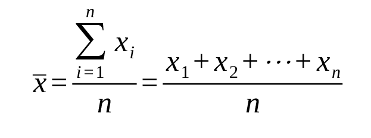
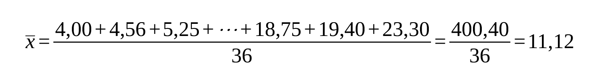
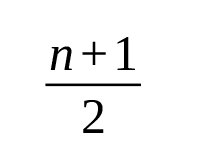
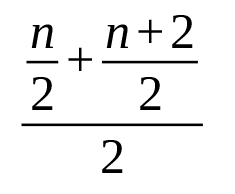
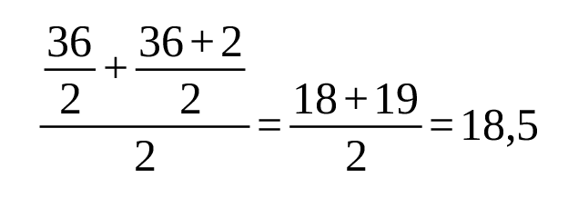
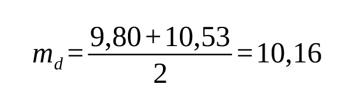

Módulo 1 | Aula 2
Estatística Básica
Medidas de tendência central
Média
Leva em conta todos os n elementos da amostra. Para seu cálculo somamos todos os valores e dividimos pelo total de observações na amostra.
Estatisticamente, podemos representar o cálculo da média como:

Vejamos um exemplo com a variável salário. Somamos todas as 36 observações e dividimos por 36. Temos que a média é igual a

Significa que a média de salário dessa empresa é de 11,12 salários-mínimos.
Mediana
É o valor que divide a distribuição ao meio. Então, 50% das observações estão abaixo desse valor e 50% estão acima. A mediana é uma medida robusta, pois é menos sensível a valores atípicos.
Para o cálculo da mediana é preciso ordenar do menor para o maior valor os dados da variável.
A posição da mediana é dada pelo elemento de ordem:

se o tamanho da amostra (n) for um número ímpar e, pelo elemento de ordem

quando o tamanho da amostra for um número par.
Assim, considerando a nossa variável salário (com 36 observações – número par), a mediana é dada por
que é igual a:

Com a ordenação dos valores, temos que a mediana é igual a média das posições 18 e 19. Assim,
Posição 18 = 9,80;
Posição 19 = 10,53

Logo, podemos dizer que 50% dos valores estão abaixo de 10,16 e 50% estão acima desse valor.
Importante ressaltar que quando estamos em face de um conjunto de dados devemos, sempre, calcular a média, a mediana e outras medidas que ainda vamos aprender aqui. Porém, é fato que é mais comum usarmos a média em detrimento da mediana. Por quê? Talvez porque seja mais simples de calcular a média do que a mediana.
Outro ponto que merece atenção é que quando temos distribuições simétricas tanto faz usarmos uma ou outra (pois serão aproximadamente iguais), mas se a distribuição por assimétrica (à direita ou à esquerda) é recomendado que se use a mediana, por ser uma medida mais robusta.
Moda
É o valor mais frequente da variável. Pode ser que uma variável tenha mais de uma moda ou, até mesmo, não ter moda (amodal).
A variável salário, por exemplo, é amodal.